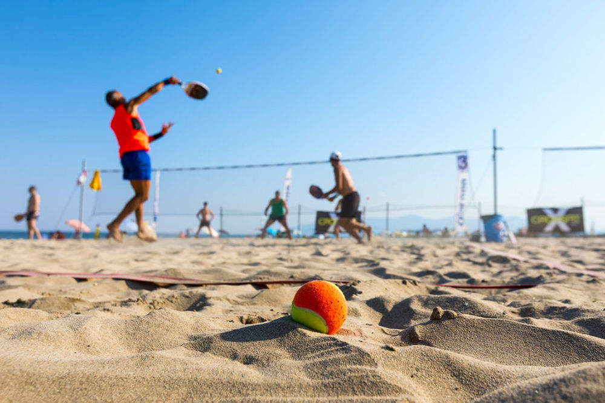

Embora muitas pessoas pensem que o beach tennis é uma modalidade nova, saiba que ele foi criado no ano de 1987 por meio da província de Ravenna, localizada na Itália. No entanto, foi só em 1996 que ele começou a se popularizar entre as pessoas e, consequentemente, se profissionalizar, onde a Federação Internacional de Tênis (ITF) colocou algumas regras para o esporte. Esta modalidade reúne a mistura de alguns esportes bastante conhecidos: tênis tradicional, vôlei de praia, badminton e frescobol, modalidades que requerem bastante movimentação do corpo. Por outro lado, embora tenham muitas semelhanças, o esporte é diferenciado, começando pelos acessórios utilizados, como a raquete, que possui características próprias para o atleta que for jogar. Mas, afinal, quais são as principais caraterísticas do beach tennis? Para jogar este esporte de areia, é preciso ter areia, raquete, bola e rede. O objetivo é lançar a bolinha para o campo adversário com a ajuda de uma raquete, impossibilitando que ela seja rebatida pelo time oponente, caindo no chão.
